Adapt to the physics, not to the data.
Under review
Deep CT denoisers fail when the target acquisition noise differs from the conditions they were trained under. We propose NoLA, a source-free adaptation method for projection-domain CT denoisers that uses only unlabelled target sinograms — no source data, no paired targets, no clean references.
NoLA estimates the target signal-dependent Poisson–Gaussian noise law directly from the projections and uses it to guide a local update of the pretrained network through residual-statistics matching and source anchoring. On simulated cross-system transfer from LoDoPaB to Mayo geometry, NoLA improves the frozen source model by 2.97 dB and recovers 65.5% of the supervised fine-tuning gap. Across controlled noise-law shifts, the adaptation gain is strongly predicted by the source–target law mismatch (ρ = 0.953), while a low-mismatch stress test exposes the limits of residual-statistics-only adaptation.
A projection denoiser is trained on one scanner and deployed on another. The photon budget and the detector's electronic noise differ, so the variance–signal relationship the network implicitly learned no longer holds. Only noisy target measurements are available, and the original source data cannot be accessed.
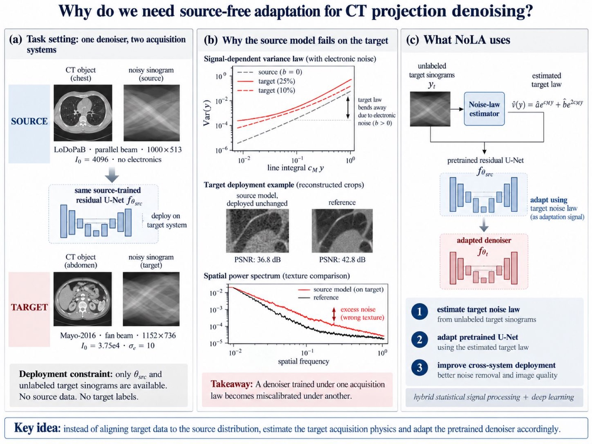
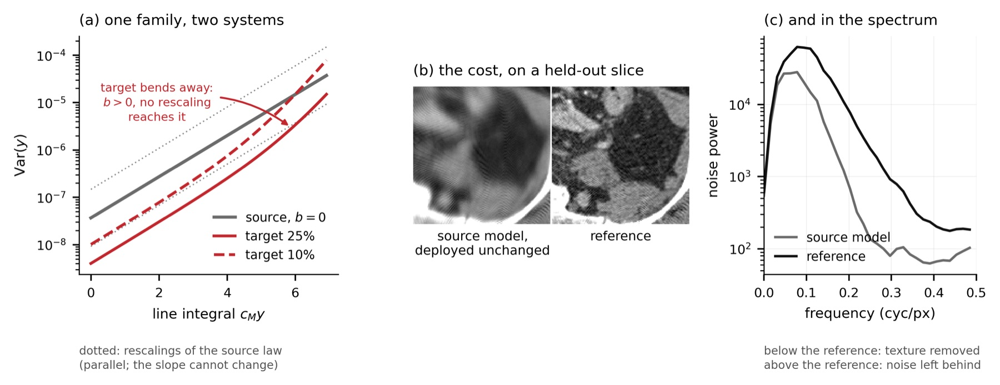
For a post-log projection p, the Poisson–Gaussian model gives
Var(p) ≈ ep/I₀ + σe²e2p/I₀². Both
systems store the same dimensionless line integral, but LoDoPaB divides by
MU_MAX and Mayo does not — so harmonising is an exact unit
conversion with no free parameter, and in common units both obey:
The source acquisition is purely Poisson, so b = 0 exactly — it lies on the boundary of the family. Any target with electronic noise has b > 0. That is why the target law cannot be reached by rescaling the source law, and why adaptation must identify (a, b) rather than shift a magnitude.
Move the target scanner's parameters and watch the two laws separate. The dashed line is the best possible rescaling of the source law — it still cannot follow the target's shape.
D = ⟨|log(vt/vs)|⟩ is the shift magnitude over the signal distribution. It is computable from the estimated law and the known source law — with no labels — so it can be checked before deciding to adapt.
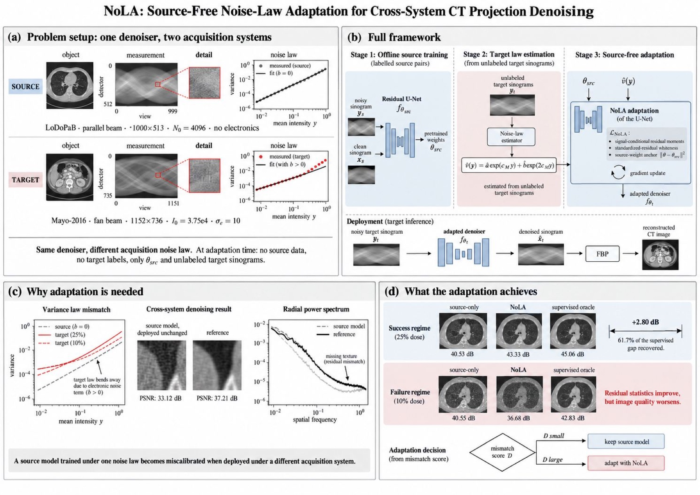
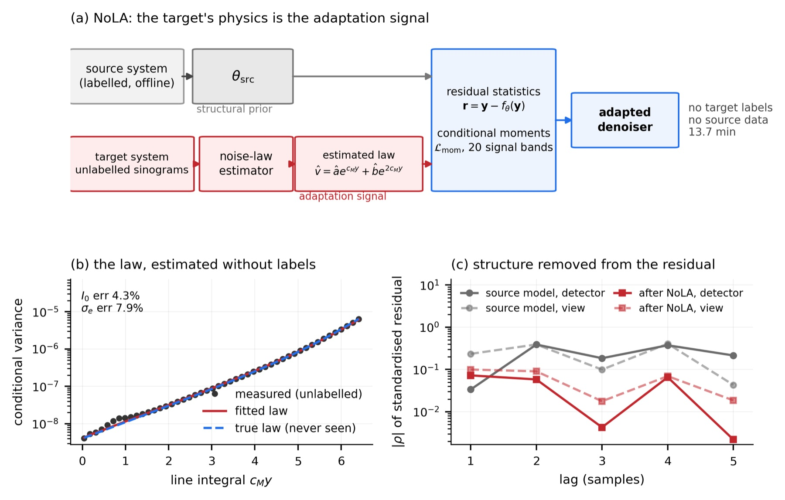
A local second difference along the view axis provides a noise witness (differencing across detector bins is biased by sinogram curvature). The signal level is estimated from disjoint neighbouring bins so the variance is not conditioned on the same samples. Samples are grouped into signal bands, the variance estimated robustly by MAD, and the law fitted in log space with a Jensen correction.
The final objective is the signal-conditional moment loss alone: in each of K = 20 signal bands, the residual's mean and variance are matched to the estimated law. Two further terms were tested and removed:
| Term | What it does | Verdict |
|---|---|---|
moment | conditional residual mean and variance match the law | kept — the whole objective |
whiteness | decorrelates the standardised residual over lags 1–5 | removed: −0.17 dB, buys decorrelation only |
anchor | relative L2-SP toward the source weights | removed: +0.10 dB but not needed for stability |
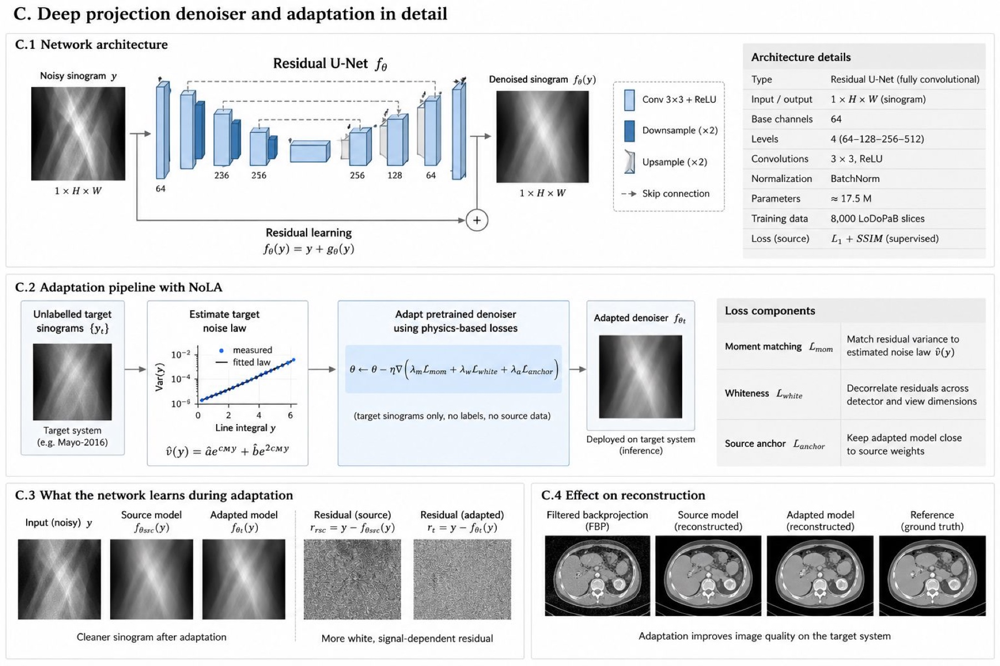
Cov(r, ŝ) = α(1−α)Var(y) > 0, so driving it to zero
moves the model away from the optimum. It is reported only as an
ablation.All comparisons are on held-out patients that adaptation never saw. Signed error maps are the diagnostic row: residual that looks like noise is noise, whereas visible anatomy is structure the method deleted.
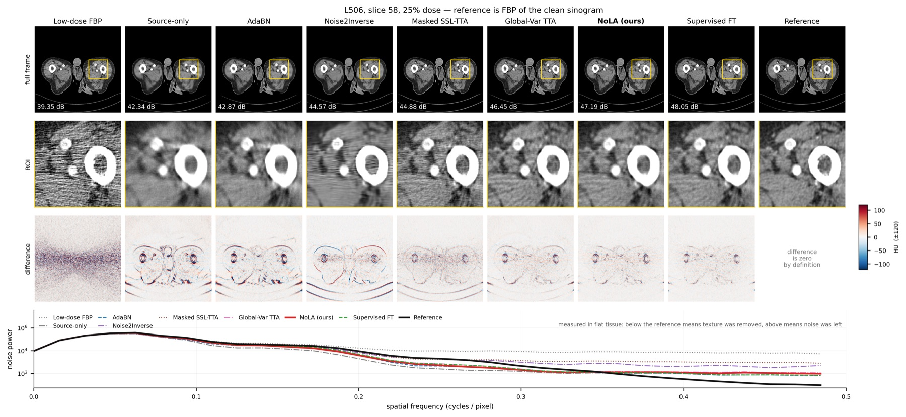
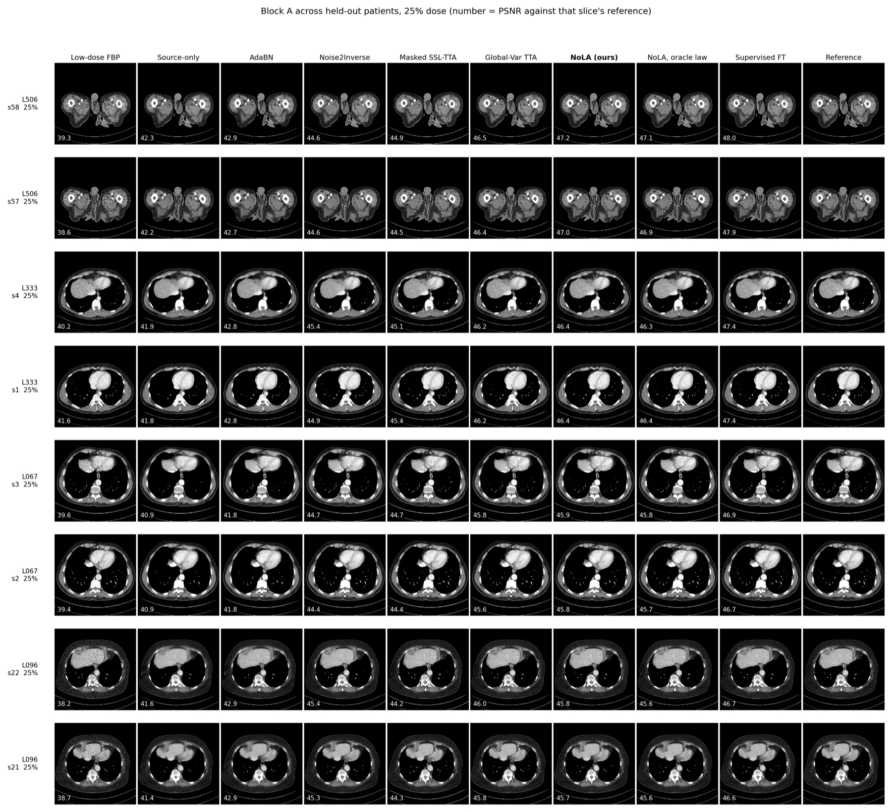
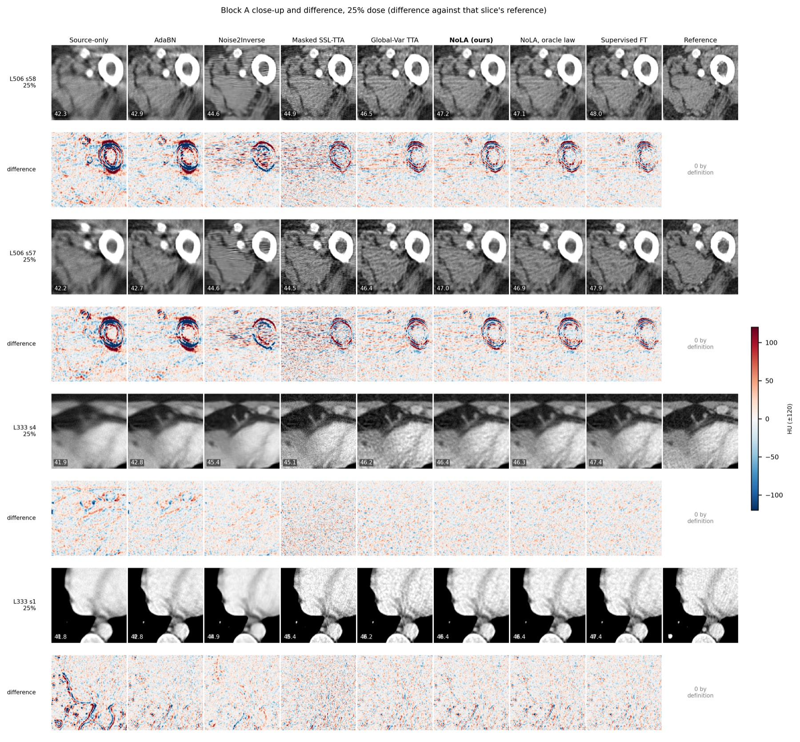
232 slices from four held-out patients; means across patients. Three reference conventions appear here and must not be read across. PSNRop/SSIMop use FBP(clean sinogram), which isolates denoising error from reconstruction mismatch; the middle block uses the vendor reconstruction; NPS is measured against a full-dose acquisition through the same operator.
Click any column to sort. Best in column in red. The three reference groups are marked in the header and must not be read across.
What the objective actually constrains, measured on patients adaptation never saw. Law error is the mean |log(measured variance / predicted variance)| over signal bands; max|ρ| is the largest short-range autocorrelation of the standardised residual.
Against Noise2Inverse — the like-for-like label-free baseline, trained on the same six target patients and evaluated on the same held-out four — NoLA wins on all four patients individually (+3.00, +1.92, +1.76, +0.74 dB) and on 80.6% of slices, with lower LPIPS on 100% of them. We ran it at both K = 2 and the authors' default K = 4, and compare against the stronger (K = 2 by 5 dB).
Holding anatomy, geometry, sampling and reconstruction fixed and varying only (I₀, σe) over a 4×4 grid: the gain is predicted by the full law mismatch D (ρ = 0.953), not by σe alone (ρ = −0.137, p = 0.61).
All three failures are low-mismatch cells (D < 1). Since D needs no labels, this is a usable decision rule before adapting rather than an observation afterwards.
The residual audit measures, on the held-out patients, how well each method's residual obeys the estimated law and how decorrelated it is. Plotted against reconstruction quality, the two do not move together — in either direction.
At 10% dose every label-free method degrades the frozen source model. The final objective is the least harmful — 38.91 dB against source-only's 40.55 (−1.65 dB), worse on three of four patients, better on one — and +2.22 dB better than the previous formulation on 100% of slices: the whiteness and anchor terms were responsible for most of the earlier failure. Global-Variance TTA is actively destructive here (max|ρ| 0.834, the most correlated residual of any method). Only supervised fine-tuning helps (+2.27 dB). The mismatch score flags this regime in advance: D = 1.05, the borderline the controlled grid identified.
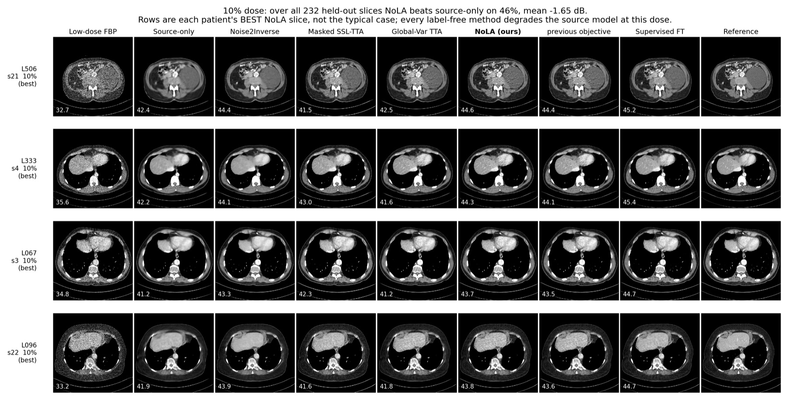
Removing NoLA's whiteness term improves every full-reference metric and degrades only texture and residual decorrelation. We swept its weight to find out whether that was a badly chosen constant or a real frontier.
The cost is a step, not a slope: switching the term on at all costs ~0.2 dB and raising the weight tenfold costs no more, while decorrelation saturates by λ = 0.5. There is a reason no weight escapes it — the Wiener residual has spectrum σ⁴/(Ps(f)+σ²), which is not flat, so the MMSE residual is not white either and enforcing whiteness must move away from MMSE. We keep λ = 1, the most efficient point measured, and say plainly that a reader optimising PSNR alone should switch it off.
From unlabelled sinograms of the six adaptation patients, relative error on (I₀, σe) is (4.3%, 7.9%) at 25% dose, (2.9%, 4.5%) at 10% and (2.4%, 5.7%) at 5%. Supplying the true law instead of the estimate is worth only 0.15 dB — the estimator is not the bottleneck.
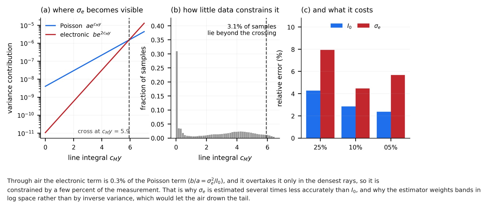
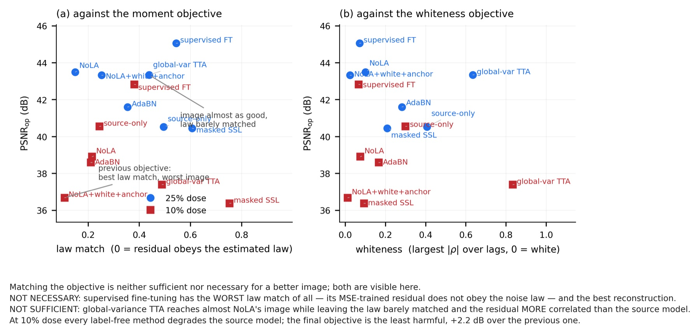
The reference implementation is self-contained — numpy and torch only, with the tomography stack needed just for the real-data path. The demo needs no data download and no ASTRA, and runs on a laptop CPU.
# end to end on synthetic data, ~6 minutes on a CPU git clone https://github.com/mtliba/nola && cd nola pip install -e ".[demo]" python examples/demo.py # it prints the criterion before adapting: # shift magnitude D = 2.18 -> adaptation should help # and this reproduces the failure on purpose (D = 0.50): python examples/demo.py --target-i0 8000 --target-sigma-e 12
The demo calls the same nola.lawfit and
nola.adapt used for every number on this page, so it exercises the
shipped code rather than a simplified restatement of it. Reproducing the paper
needs LoDoPaB-CT and the Mayo-2016 LDCT Grand Challenge data, which we cannot
redistribute — see the README.
astra_cpu and astra_cuda reconstruct the same
sinogram differently enough to shift PSNR by 1.2 dB on average and 2.9 dB at
worst, always in the same direction. A single table must never mix them; our
evaluation records the backend in every result and refuses to combine
them.